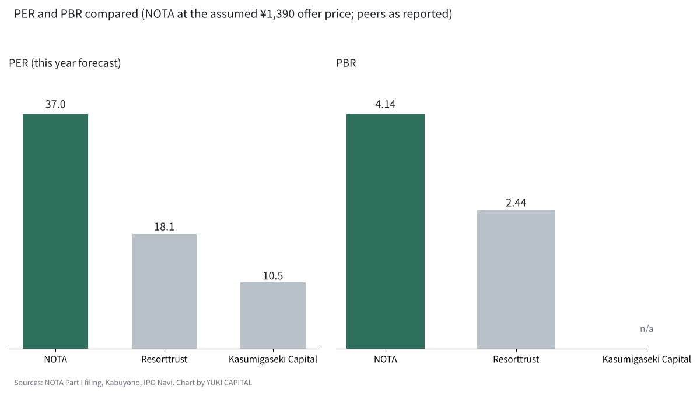
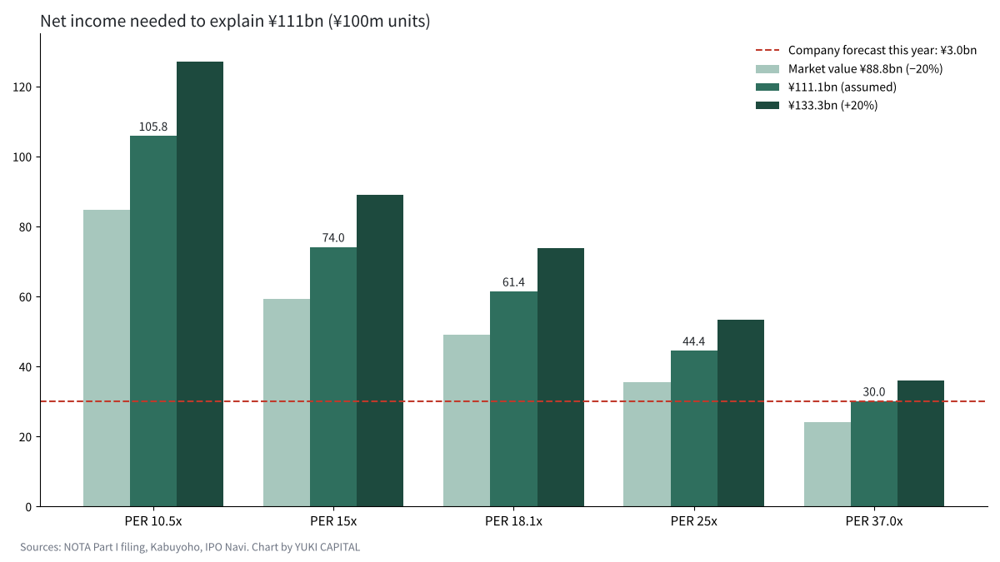

What Is Priced Into NOTA (formerly NOT A HOTEL)'s ¥111 Billion Expected IPO Valuation?
NOTA Inc., which sells co-ownership of villas (renamed from NOT A HOTEL in October 2026), received listing approval from the Tokyo Stock Exchange on 6 November 2026 and plans to list on the Growth market on 9 December [1][2].
At the assumed offer price of ¥1,390, its market value comes to about ¥111 billion (roughly $704 million), around 243 times last fiscal year's net income of ¥457 million [1].
The question here is how much profit and growth that ¥111 billion assumes. I work backwards from the disclosures and peer multiples, then vary the assumptions to test it.
- The expected market value of about ¥111 billion is 37.0 times the company's own forecast net income of ¥3.0 billion for this fiscal year, roughly double the multiple of its peer Resorttrust (about 18x).
- To justify the price at a peer-level 18x, net income would need to reach about ¥6.1 billion; at 15x, about ¥7.4 billion. The price assumes profit 2.0 to 2.5 times this year's forecast.
- Support comes from 79.1% occupancy (versus a 56.9% average for Japanese resort hotels) and about ¥37 billion of contracted revenue not yet recognised. The weak points are negative operating cash flow and the fact that about 70% of the shares offered are being sold by existing shareholders.

Question and background
NOTA was founded on 1 April 2020. Its founder, Shinji Hamauzu, was born in Miyazaki in 1983. In 2007 he co-founded the e-commerce builder Aratana with a classmate from technical college, and in 2015 sold it to Start Today (now ZOZO) through a share exchange [3][4]. He left ZOZO in March 2020 and launched NOT A HOTEL the following month; its first sites were Nasu in Tochigi and Aoshima in Miyazaki [5].
The core business is selling villas designed by architects and designers as co-ownership, in units from 10 to 360 nights a year [1]. On days the owners do not use, the villas are rented out as a hotel, and owners pay an annual management fee of about 3% of the purchase price [1]. Payments are received 30% at contract, 40% when the structure is complete and 30% at completion, and revenue is recognised at opening or handover [1]. Last fiscal year, memberships (the sale of ownership rights) brought in ¥11.54 billion and operations ¥1.99 billion [1]. As of September 2026, 48 properties at 10 sites were open and there were 1,357 owners in total [1].
Some definitions. Expected market value is the assumed offer price multiplied by the number of shares outstanding at listing. The price-to-earnings ratio (PER) is market value divided by net income, the price-to-sales ratio (PSR) is market value divided by revenue, and the price-to-book ratio (PBR) is market value divided by net assets; each shows how many years of earnings or assets the price represents. Occupancy is the share of saleable rooms actually used.
Similar businesses exist in Japan and abroad. In the US, Pacaso sells homes in shares of 1/8 to 1/2 and raised money at a $1.5 billion valuation in 2021 [6]. Resorttrust, Japan's largest membership resort operator, is listed on the TSE Prime market; for the year to March 2026 it reported revenue of ¥263.0 billion and operating profit of ¥29.2 billion [7]. Marriott Vacations Worldwide, the largest timeshare company, reported 2025 revenue of $5.03 billion and a net loss of $308 million [8]. Inspirato, a US luxury vacation club, agreed in December 2025 to be taken private at $4.27 a share, so this kind of business has not always been valued highly by public markets [15].
Data and method
The figures start from the securities report filed for listing (Part I) and the disclosures at approval [1][2]. The assumed offer price is ¥1,390 and shares outstanding at listing are 79,898,000, giving an expected market value of ¥111.058 billion [2]. Last fiscal year (to March 2026) revenue was ¥12.878 billion, net income ¥457 million and net assets ¥15.048 billion. The company forecasts revenue of ¥32.58 billion and net income of ¥3.0 billion for this fiscal year (to March 2027) [2].
I chose two comparison companies: Resorttrust, the membership resort operator, and Kasumigaseki Capital, a property developer and operator. Their forecast PERs as reported are about 18.1x and about 10.5x, and Resorttrust's PBR is about 2.44x [9][10]. For occupancy, I used the 2025 preliminary figures from the Japan Tourism Agency's accommodation survey [11].
The method has two steps. First, I break the expected market value into three multiples. Second, I apply peer multiples and work back to the net income needed to explain ¥111 billion, as market value divided by the multiple. I then test sensitivity to the offer price moving 20% up or down within the indicative range, and to three different multiples.
Results
| Measure | NOTA | Resorttrust | Kasumigaseki Capital |
|---|---|---|---|
| PER (this year's forecast) | 37.0x | about 18.1x | about 10.5x |
| PER (last year, actual) | 243.0x | — | — |
| PSR (last year) | 8.62x | about 1.4x | — |
| PBR (net assets at end-Sept 2026) | 4.14x | about 2.44x | — |

On this year's forecast net income, the PER is 37.0x, about twice Resorttrust's. On last year's actual figure it jumps to 243.0x, showing that the company is listing while profits are still small. The PSR, based on revenue, is 8.62x, far above peers whose business is mainly selling memberships.
Occupancy, on the other hand, is strong. NOTA's 79.1% is 22.2 points above the 56.9% average for resort hotels in the Japan Tourism Agency's 2025 figures, and also above the 74.2% for city hotels [1][11]. Over a year, that works out to about 289 nights filled. There is also about ¥37.02 billion of contracted revenue not yet recognised, which backs up the size of this year's revenue forecast [1].
Sensitivity analysis
| Multiple applied | Net income needed to explain ¥111bn | Times this year's forecast (¥3.0bn) |
|---|---|---|
| PER 37.0x (current) | ¥3.00bn | 1.00x |
| PER 25x | ¥4.44bn | 1.48x |
| PER 18.1x (Resorttrust) | ¥6.14bn | 2.05x |
| PER 15x (peer average) | ¥7.40bn | 2.47x |
| PER 10.5x (Kasumigaseki Capital) | ¥10.58bn | 3.53x |

To explain ¥111 billion at a peer-level 18.1x, net income would need to be about ¥6.14 billion, about twice this year's forecast. At the 15x peer average cited by an IPO commentary site it would be about ¥7.40 billion, and at Kasumigaseki Capital's 10.5x about ¥10.58 billion [12].
If the offer price moves 20% either way within the indicative range, market value ranges from about ¥88.8 billion to about ¥133.3 billion. The net income needed at 18.1x would then be about ¥4.91 billion and about ¥7.36 billion respectively. In every combination, the price assumes profit above this year's forecast of ¥3.0 billion.
Shareholders and the offering
On a fully diluted basis, the founder Mr Hamauzu is the largest shareholder at 27.45%, followed by Open House Group at 8.55%, Sequoia at 6.18%, ANRI at 5.57%, Toyota Invention Partners at 4.47% and SBI Holdings at 3.57% [13]. Before listing, the company raised a cumulative ¥33.2 billion through Series C, and ¥16.5 billion in its Series D in August 2026 [13].
The offering consists of 5,080,800 new shares, 12,216,600 shares sold by existing holders and up to 2,594,600 over-allotment shares [2]. Excluding the over-allotment, about 70.6% of the shares are sales by existing shareholders. The company's maximum proceeds are about ¥9.9 billion, earmarked for personnel and marketing, not property development [12]. Some venture capital investors have lock-ups that end once the share price exceeds 1.5 times the offer price [12]. That means there is a price level just after listing where selling is likely to appear.
Discussion
There is an opposing view: measuring NOTA by peer multiples ignores how fast it is growing. Revenue is forecast to rise about 2.5 times, from ¥12.878 billion last year to ¥32.58 billion this year, and profit from ¥457 million to ¥3.0 billion [2]. If that growth continued for two or three years, 37x could turn out not to be too high a price.
The limits are large, though. Because revenue is recognised in lumps at opening or handover, annual profit swings with the timing of handovers [14]. Operating cash flow was negative by ¥2.571 billion last year and by ¥6.125 billion in the first half of this year, and interest-bearing debt nearly doubled in two years to ¥17.963 billion [14]. The auditor also listed the timing of membership revenue recognition as a key audit matter [14]. The peer multiples here come from press reports and are not aligned to the same date. Before listing, in October, one individual investor's analysis wrote that there was no basis for saying the shares were not expensive [16].
There are three checkpoints. First, the indicative range on 20 November and the offer price on 30 November, and which way they move from ¥1,390. Second, whether this year's net income reaches ¥3.0 billion. Third, whether the roughly ¥37 billion of unrecognised revenue turns into revenue on schedule and operating cash flow returns to positive.
Conclusion
The expected market value of about ¥111 billion is 37.0 times this year's forecast net income; to explain it on peer multiples requires profit 2.0 to 2.5 times the forecast. High occupancy and about ¥37 billion of unrecognised revenue partly support that growth expectation. On the other hand, negative cash flow and an offering made up mostly of existing shareholders selling remain as factors pushing the price down.
How I see it
From Japan, I see this ¥111 billion as too high. To me, NOTA is a hotel and property company, and it is being given twice the multiple of its peers. Still, I understand that the price reflects the strength of a strategy and design aimed at Japan's very wealthiest. The shareholder list also caught my eye: the founder holds close to 30%, and Open House just under 9%. I have decided to keep my money in the AI companies I chose myself, so I will not buy at the listing and will only watch the price on 9 December.
References
- Japan Exchange Group, "NOTA Inc. Securities Report for New Listing Application (Part I)", 2026-11-06, https://www.jpx.co.jp/listing/stocks/new/t13vrt000002kfqd-att/12NOTA-1s.pdf
- BRIDGE, "NOTA (formerly NOT A HOTEL) approved for TSE Growth listing", 2026-11-06, https://thebridge.jp/2026/11/nota-tse-growth-ipo-approved
- Start Today Co., Ltd., "Notice of acquisition of shares in Aratana Inc. (making it a wholly owned subsidiary)", 2015-03-25, https://corp.zozo.com/assets_wp/cf/wp-content/uploads/2017/03/Release_ST_Aratana201503251.pdf
- Gendai Business, "Aratana, Shinji Hamauzu", 2015, https://gendai.media/articles/-/42920
- BRIDGE, "NOT A HOTEL sells about ¥4 billion in two months", 2021-11-30, https://thebridge.jp/2021/11/not-a-hotel-sold-4b-yen-in-2-month
- Pacaso, "Pacaso Raises $35M to Expand Luxury Home Co-Ownership", 2025-07-31, https://press.pacaso.com/2025-07-31-Pacaso-Raises-35M-to-Expand-Luxury-Home-Co-Ownership
- Resorttrust, Inc., "Summary of Financial Results for the Fiscal Year Ended March 2026", 2026-05-15, https://www2.jpx.co.jp/disc/46810/081220260513530758_tse-acedjpsm-46810-20260515346810-ixbrl.htm
- Marriott Vacations Worldwide, "Fourth Quarter and Full Year 2025 Results", 2026-02, https://ir.marriottvacationsworldwide.com/node/20756
- Kabuyoho, "Resorttrust (4681)", accessed 2026-11-08, https://kabuyoho.jp/reportTarget?bcode=4681
- Kabuyoho, "Kasumigaseki Capital (3498)", accessed 2026-11-08, https://kabuyoho.jp/reportTarget?bcode=3498
- Japan Tourism Agency, "Accommodation Survey 2025 (preliminary)" (summary by Travel Voice), 2026-03-02, https://www.travelvoice.jp/20260302-159329
- IPO Navi, "NOTA (673A) IPO listing assessment", 2026-11-06, https://ipo-navi.jp/column/nota-not-a-hotel-673a-ipo-listing-report
- BRIDGE, "NOT A HOTEL raises ¥16.5 billion in Series D", 2026-08-06, https://thebridge.jp/2026/08/not-a-hotel-raises-series-d-funding
- note (toworu_note001), "Reading NOTA's listing documents", 2026-11, https://note.com/toworu_note001/n/n285d2e10b827
- BusinessWire, "The Exclusive Collective Launches with Agreement to Acquire Inspirato", 2025-12-16, https://www.businesswire.com/news/home/20251216433405/en/The-Exclusive-Collective-Launches-with-Agreement-to-Acquire-Inspirato-Uniting-Three-Market-Leading-Luxury-Travel-Brands
- note (k19sawada), "Thinking about the NOT A HOTEL listing", 2026-10-14, https://note.com/k19sawada/n/nbc444e3af136
Charts by YUKI CAPITAL. Top image: Salman Saqib (Unsplash)
I record my daily numbers and decisions on X.